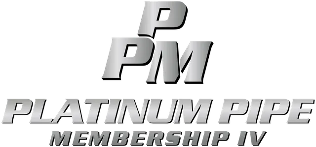

The Platinum Pipe Membership is ideal for homeowners who want more than occasional service calls. With priority scheduling, ongoing maintenance support, and exclusive member benefits, Angle Stop Plumbing offers a smarter, more proactive way to care for your plumbing system.
Join Today Platinum Pipe Plumbing Membership
Why Choose the Platinum Pipe Membership?
Plumbing problems rarely begin as major emergencies. More often, they start with small warning signs like slow drains, minor leaks, inconsistent water pressure, or aging fixtures. Without regular attention, those issues can lead to costly repairs, water damage, and unexpected inconvenience.
The Angle Stop Plumbing Platinum Pipe Membership helps homeowners avoid those surprises by offering a premium level of support focused on prevention and long-term value. By subscribing, you can:
- Catch plumbing problems early before they become costly repairs
- Enjoy priority plumbing service when urgent issues happen
- Save more on repairs and maintenance with exclusive member pricing
- Improve the reliability of your home's plumbing system
- Reduce the risk of unexpected breakdowns and service interruptions
Our Platinum Pipe Membership Provides Multiple Options for Property Owner(s):
Platinum Pipe Membership I
- Annual Conventional Water Heater Service
- (2) Free Diagnostic Call Per Year
- Priority Scheduling & Dispatch
- Annual Leak Check of Property
- Member Discount of Plumbing Services
- Annual Plumbing Inspection
Platinum Pipe Membership II
- Annual Conventional Water Heater Service
- (2) Free Diagnostic Call Per Year
- Priority Scheduling & Dispatch
- Annual Leak Check of Property
- Member Discount of Plumbing Services
- Annual Plumbing Inspection
- Water Softener Service
- Whole House Filter Replacement (Filters Sold Separately)
Platinum Pipe Membership III
- Annual Tankless Water Heater Service
- (2) Free Diagnostic Call Per Year
- Priority Scheduling & Dispatch
- Annual Leak Check
- Member Discount of Plumbing Services
- Annual Plumbing Inspection

Platinum Pipe Membership IV
- Annual Tankless Water Heater Service
- (2) Free Diagnostic Call Per Year
- Priority Scheduling & Dispatch
- Annual Leak Check
- Member Discount of Plumbing Services
- Annual Plumbing Inspection
- Water Softener Service
- Whole House Filter Replacement (Filters Sold Separately)
For homeowners who want convenience, peace of mind, and dependable service, a platinum-level plan is a practical investment.
Benefits of the Angle Stop Plumbing Platinum Pipe Membership
The Platinum Pipe Membership is built to deliver enhanced value and support for your home's plumbing system. While exact plan details may vary, a premium plumbing membership often includes valuable benefits such as:
- Top-priority scheduling for faster service appointments
- Comprehensive plumbing inspections to identify wear, leaks, and developing issues
- Exclusive discounts on plumbing repairs and services
- Reduced or waived service call fees
- Preventative maintenance recommendations tailored to your home
- Preferred member support for urgent plumbing concerns
- Ongoing system oversight to help maintain long-term performance
These benefits can help homeowners avoid unnecessary stress while making plumbing maintenance easier and more affordable throughout the year.
Save Money with Preventative Plumbing Maintenance
One of the biggest advantages of the Platinum Pipe Membership from Angle Stop Plumbing is the ability to lower long-term plumbing costs. Preventative maintenance makes it easier to find and address minor issues before they lead to larger repair bills or property damage.
Routine inspections may reveal:
- Hidden leaks
- Pipe corrosion
- Drain buildup
- Worn shut-off valves
- Water pressure problems
- Water heater performance issues
- Fixture wear and tear
Fixing small plumbing issues early is usually much less expensive than dealing with emergency repairs or water damage restoration. With the Platinum Pipe Membership, homeowners can take a proactive approach that helps protect both their property and their budget.
Get Priority Plumbing Service When You Need It Most
When a plumbing issue affects your home, quick response matters. Whether it is a leaking pipe, clogged drain, overflowing toilet, or water heater problem, delays can make the situation worse.
The Angle Stop Plumbing Platinum Pipe Membership offers priority scheduling, helping members receive service faster than standard appointment availability. That means less waiting, less disruption, and more confidence that help is available when you need it.
For busy families and homeowners, that added responsiveness can make a major difference.
Help Extend the Life of Your Plumbing System
Your plumbing system includes many essential components, from pipes and fixtures to valves, drains, and water heaters. Over time, normal wear can lead to reduced performance, inefficiency, and unexpected failures.
The Platinum Pipe Membership helps support the long-term condition of your plumbing system by encouraging early detection and professional maintenance. Benefits of ongoing care can include:
- Better plumbing efficiency
- Reduced wear and tear
- More consistent water pressure and flow
- Fewer unexpected plumbing failures
- Improved reliability of key plumbing components
A well-maintained system is easier to manage, often less expensive to repair, and better equipped to support your household every day.
A Premium Plan for Homeowners Who Want Maximum Value
The Angle Stop Plumbing Platinum Pipe Membership is a strong fit for homeowners who want a higher level of service and protection. It may be especially useful for:
- Families who depend on reliable plumbing every day
- Owners of older homes with aging plumbing systems
- Homeowners who want premium service benefits
- Property owners looking to reduce surprise repair costs
- Anyone who values preventative maintenance and priority service
If you prefer a proactive, organized approach to home plumbing care, the Platinum Pipe Membership offers premium support and long-term convenience.
Why Choose Angle Stop Plumbing?
Angle Stop Plumbing is committed to quality workmanship, responsive support, and honest service. Homeowners choose Angle Stop Plumbing because they want a trusted plumbing partner who understands the value of preventative maintenance and dependable care.
With the Platinum Pipe Membership, you are not just enrolling in a service plan. You are choosing long-term support from professionals focused on protecting your home, preserving your plumbing system, and helping you avoid unnecessary stress.
Join the Platinum Pipe Membership Today
The Platinum Pipe Membership by Angle Stop Plumbing gives homeowners a premium way to manage plumbing care with top-priority service, preventative maintenance, and exclusive savings. It is a smart option for protecting your home, reducing the risk of major plumbing issues, and keeping your system performing at its best.
Join the Platinum Pipe Membership today and experience the confidence that comes with premium plumbing care from Angle Stop Plumbing.